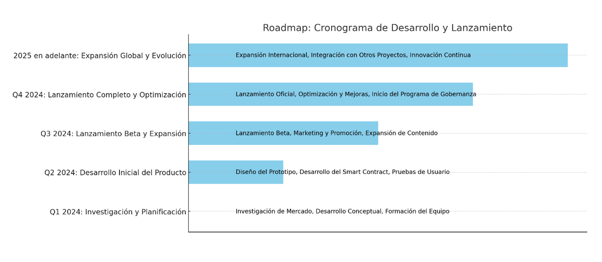

Sobre EstoyETICOin
Este proyecto de criptomoneda con una solución de token está diseñado para abordar el creciente problema de la sobreestimulación sexual en la sociedad actual. A través de una plataforma basada en Blockchain, el proyecto ofrece programas incentivan el entrenamiento de la mente de acuerdo a los principios éticos de la filosofía Estoica y conocimientos de sí mismo de la mano con la neuropsicopedagogía aprovechando tecnologías de punta como la realidad aumentada entre otras para reducir el flagelo de la sobreestimulación sexual. También ofrecerá programas y recursos de entrenamiento de gimnasio estoico virtual, como ejercicios de mindfulness, meditación, la trasformación de las impresiones, el saneamiento de las percepciones y una educación sexual saludable. Los usuarios serán recompensados con tokens por participar en actividades que promuevan el autocontrol y la salud mental, los cuales podrán ser canjeados por servicios adicionales o beneficios dentro de la plataforma y reducir su exposición a contenidos sexuales explícitos y a reorientar su energía hacia actividades más constructivas.
1. Entrenamiento Mental: La plataforma proporciona herramientas y programas que fortalecen la autodisciplina, ayudando a los usuarios a reducir su dependencia de estímulos sexuales y a mejorar su salud mental.2. Privacidad y Seguridad: Al estar basada en blockchain, la plataforma garantiza la privacidad de los usuarios y la seguridad de sus datos, ofreciendo un entorno seguro para el crecimiento personal.
3. Economía Sostenible: Utilizando un sistema de tokens, el proyecto incentiva la participación y el compromiso, permitiendo a los usuarios ganar recompensas mientras mejoran su bienestar personal.
4. Empoderamiento del Usuario: La descentralización del proyecto permite que los usuarios tengan voz en la gobernanza y evolución de la plataforma, asegurando que esta se desarrolle de acuerdo con las necesidades de su comunidad.Este proyecto no solo ofrece una solución tecnológica avanzada, sino que también promueve un cambio cultural hacia una sociedad más consciente y saludable, reduciendo los efectos negativos de la sobreestimulación sexual en la vida diaria.
Detalles del Token
Características del Token:
1. Nombre y Símbolo: El token tiene un nombre y símbolo únicos que lo distinguen en el mercado de criptomonedas, facilitando su identificación y uso en diferentes plataformas y exchanges. EstoyETICOin(ETI)
2. Blockchain: El token está basado en una blockchain segura y eficiente, como Ethereum o Binance Smart Chain, lo que garantiza su interoperabilidad, escalabilidad y seguridad.
3. Funcionalidad: El token se utiliza para acceder a servicios premium dentro de la plataforma, como programas avanzados de entrenamiento mental, consultas personalizadas y contenido exclusivo. Además, puede ser intercambiado por otros bienes y servicios dentro del ecosistema o en exchanges externos.
4. Suministro Total: El suministro de tokens es limitado, lo que ayuda a mantener su valor a lo largo del tiempo. Este suministro fijo asegura que no haya inflación descontrolada, beneficiando a los poseedores de tokens a largo plazo.
5. Staking: Los usuarios pueden participar en staking, bloqueando sus tokens para apoyar la red y recibir recompensas periódicas. Esto no solo incentiva la retención de tokens, sino que también ayuda a la seguridad y estabilidad de la red.
6. Gobernanza: Los poseedores de tokens tienen derechos de gobernanza, lo que les permite votar en decisiones clave del proyecto, como actualizaciones de la plataforma, cambios en la política de tokens y el uso de fondos comunitarios. Este mecanismo asegura que el proyecto evolucione de acuerdo con las necesidades de la comunidad.
Beneficios para los Poseedores de Tokens:
1. Recompensas y Beneficios: Los poseedores de tokens pueden ganar recompensas adicionales al participar en programas de entrenamiento, staking y otras actividades dentro de la plataforma. Estos incentivos no solo aumentan el valor de los tokens, sino que también promueven la participación continua.
2. Acceso Exclusivo: Los tokens permiten el acceso a contenido y servicios exclusivos dentro de la plataforma, proporcionando valor añadido a los usuarios que buscan una experiencia más enriquecedora y personalizada.
3. Participación en la Gobernanza: Al poseer tokens, los usuarios tienen una voz activa en la dirección del proyecto, lo que les permite influir en las decisiones que afectan directamente su experiencia en la plataforma.
4. Potencial de Apreciación: Dado el suministro limitado y el creciente interés en soluciones para la salud mental y la reducción de la sobreestimulación sexual, existe un potencial significativo de apreciación del valor del token a medida que la plataforma crece y se expande.
Este token no solo es una herramienta funcional dentro del ecosistema, sino también una inversión potencialmente valiosa para aquellos interesados en apoyar y beneficiarse de un proyecto que aborda un problema significativo en la sociedad actual.
Roadmap: Cronograma de Desarrollo y Lanzamiento
El roadmap de este proyecto de criptomoneda con solución de token para el entrenamiento de la mente y la reducción de la sobreestimulación sexual es fundamental para guiar su desarrollo y asegurar la consecución de sus objetivos. A continuación, se presenta un cronograma con hitos clave que marcan las fases del proyecto:
1. Fase 1: Investigación y Planificación (Q1 2024)
• Investigación de Mercado: Realización de estudios para entender la magnitud del problema de la sobreestimulación sexual y la demanda de soluciones basadas en blockchain.
• Desarrollo Conceptual: Definición del modelo de negocio, tokenomics, y la estructura de gobernanza del proyecto.
• Formación del Equipo: Reunión del equipo de desarrollo, asesores, y expertos en salud mental para llevar a cabo el proyecto.
2. Fase 2: Desarrollo Inicial del Producto (Q2 2024)
• Diseño del Prototipo: Creación de un prototipo funcional de la plataforma que incluye las funcionalidades básicas de entrenamiento mental y manejo de tokens.
• Desarrollo del Smart Contract: Implementación del contrato inteligente del token, asegurando su funcionalidad para intercambios, staking y gobernanza.
• Pruebas de Usuario: Ejecución de pruebas alfa con un grupo selecto de usuarios para obtener feedback y mejorar la usabilidad de la plataforma.
3. Fase 3: Lanzamiento Beta y Expansión (Q3 2024)
• Lanzamiento Beta: Despliegue de la versión beta de la plataforma abierta a un público más amplio, permitiendo a los usuarios acceder a los programas de entrenamiento y participar en la economía de tokens.
• Marketing y Promoción: Campañas de marketing para crear conciencia sobre la plataforma y atraer a nuevos usuarios y colaboradores.
• Expansión de Contenido: Colaboración con expertos en salud mental para ampliar la oferta de contenido y programas dentro de la plataforma.
4. Fase 4: Lanzamiento Completo y Optimización (Q4 2024)
• Lanzamiento Oficial: Implementación de la versión completa de la plataforma, con todas las funcionalidades activas y el ecosistema de tokens totalmente operativo.
• Optimización y Mejoras: Ajustes continuos basados en el feedback de los usuarios, incluyendo mejoras en la interfaz de usuario, seguridad y nuevas funcionalidades basadas en la demanda.
• Inicio del Programa de Gobernanza: Activación de los mecanismos de gobernanza para que los poseedores de tokens comiencen a participar en la toma de decisiones del proyecto.
5. Fase 5: Expansión Global y Evolución (2025 en adelante)
• Expansión Internacional: Extensión del proyecto a nuevos mercados, con enfoque en la localización del contenido y la ampliación de la base de usuarios.
• Integración con Otros Proyectos: Colaboración con otras plataformas de salud mental y blockchain para crear un ecosistema interconectado y ofrecer mayores beneficios a los usuarios.
• Innovación Continua: Desarrollo de nuevas funcionalidades y exploración de tecnologías emergentes para mantener el liderazgo del proyecto en el campo del bienestar digital.
Llamado a la Acción
Este roadmap es una guía clara para la creación de una plataforma que no solo aborda un problema significativo en la sociedad actual, sino que también ofrece una solución sostenible y basada en tecnología blockchain. Invitamos a todos los interesados, desde usuarios potenciales hasta inversores y colaboradores, a unirse a nosotros en esta iniciativa y contribuir al éxito de este proyecto innovador. ¡Juntos podemos crear un impacto positivo duradero en la salud mental y el bienestar de las personas en todo el mundo!
Equipo
Para el proyecto EstoyETICOin(ETI) de criptomoneda centrado en la reducción de la sobreestimulación sexual mediante el entrenamiento de la mente, se construye un equipo con una combinación única de conocimientos y colaboraciones. estos son algunos perfiles de los miembros del equipo y sus áreas de especialización:
1. Psicólogos transpersonales o Expertos en Meditacion, Salud Mental y neuroaprendizaje:
Conocimientos y Colaboraciones:
• Experiencia en el estudio y tratamiento de la sobreestimulación sexual y la adicción.
• Conocimiento de técnicas de manejo del estrés y entrenamiento mental.
• Habilidad para diseñar programas de intervención y prevención.
Rol en el Proyecto:
• Asesorar sobre las mejores prácticas y técnicas para reducir la sobreestimulación sexual.
• Crear contenidos educativos y programas de entrenamiento para usuarios.
2. Desarrolladores de Blockchain:
Conocimientos y Colaboraciones:
• Experiencia en el desarrollo de contratos inteligentes y creación de tokens.
• Conocimiento en la integración de tecnologías blockchain con aplicaciones de salud y bienestar.
3. Especialistas en Criptomonedas y Finanzas:
Conocimientos y Colaboraciones:
• Experiencia en el mercado de criptomonedas y modelos económicos basados en tokens.
• Conocimiento en la gestión de inversiones y estrategias de monetización.
Rol en el Proyecto:
• Definir la economía del token y las estrategias de mercado.
• Asesorar sobre la viabilidad financiera y la sostenibilidad del proyecto.
4. Investigadores en Ciencias Sociales y Comportamiento:
Conocimientos y Colaboraciones:
• Conocimiento en estudios sobre el impacto de la sobreestimulación sexual en la sociedad.
• Experiencia en la investigación de comportamientos y tendencias sociales.
Rol en el Proyecto:
• Realizar investigaciones para entender mejor el problema y evaluar la eficacia de las soluciones propuestas.
• Proporcionar datos y análisis para respaldar las estrategias del proyecto.
5. Diseñadores de Experiencia de Usuario (UX/UI):
Conocimientos y Colaboraciones:
• Habilidad en el diseño de interfaces intuitivas y atractivas.
• Experiencia en la creación de experiencias digitales que fomenten el compromiso y el bienestar del usuario.
Rol en el Proyecto:
• Diseñar la interfaz y la experiencia del usuario para la plataforma.
• Asegurar que la aplicación sea accesible y efectiva en la promoción del entrenamiento mental.
6. Especialistas en Marketing y Comunicación:
Conocimientos y Colaboraciones:
• Experiencia en la promoción de productos relacionados con la salud y el bienestar.
• Habilidad en la creación de campañas efectivas y mensajes que resuenen con el público objetivo.
Rol en el Proyecto:
• Desarrollar estrategias de marketing para la plataforma y el token.
• Crear contenido que eduque y motive a los usuarios a participar en el programa.
Estos son los perfiles colaborativas de un equipo sólido y multidisciplinario para abordar la complejidad del proyecto.
 WhitePaper
WhitePaper
Nuestra Ubicación
Nuestro establecimiento está ubicado en el corazón de la ciudad
Gimnasio Mental
- Atención personalizada a los clientes
- Espacio diferenciado
- Localización
- Profesionales Calificados
- Puntualidad
- Limpieza